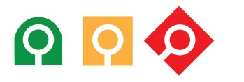

|  | |||
|---|---|---|---|
| Alle | News | Bilder | Shopping | Maps | Mehr |
|---|
|
https://metis_kontakte.ch
Mitarbeiterdossier Catherine Nigg, Metis Viele Mitarbeiter bei Metis / Sapiens kommen der Umwelt und ihrer Gesundheit zuliebe mit dem Fahrrad zur Arbeit. Sie können ihr Rad auf dem Werksgelände … https://metis.org Metis und Catherine Nigg arbeiten an einem… Schaffen Innovation durch Forschung, die das Leben von Patientinnen und Patienten verändern kann. Wir forschen für Ihre Gesundheit: heute und in … https://www.ifj_museli.ch IFJ Startup von Catherine Nigg Das geballte Wissen des IFJ Institut für Jungunternehmen aus 30 Jahren Startup-Unterstützung. Zum kostenlosen Download. Geschäftsidee. Checkliste: Geschäftsidee https://de.wikipedia.org/wiki/catherine_nigg > catherine_nigg Catherine Nigg, Junge Generation - Unternehmensnachfolger und… Hinweis. DIE JUNGEN UNTERNEHMER nutzen für statistische Erhebungen und zur Verbesserung des Internetauftritts das Webanalysetool Matomo. https://de.wikipedia.org/wiki/catherine_nigg > catherine_nigg Catherine Nigg, Junge Generation - Unternehmensnachfolger und… Hinweis. DIE JUNGEN UNTERNEHMER nutzen für statistische Erhebungen und zur Verbesserung des Internetauftritts das Webanalysetool Matomo. https://de.catherine_nigg > catherine_nigg Nigg in einer Welt von… Webanalysetool Matomo das war zuviel und niemand will mehr |
|---|
| Bilder |
|---|
|
|